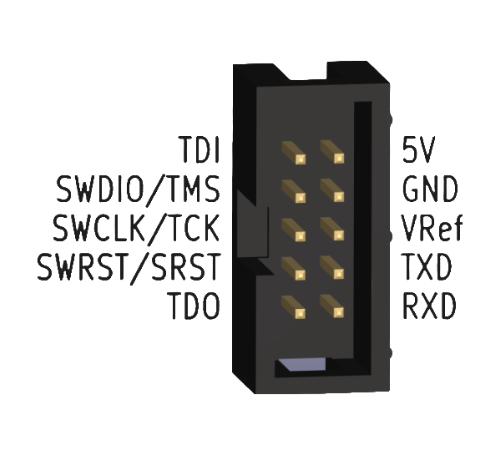
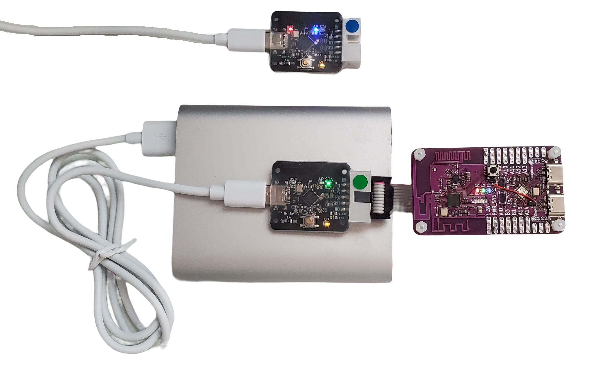

Vllink Basic2 快速上手
调试接口定义

接口 |
介绍 |
|---|---|
TDI |
JTAG数据口 |
TMS / SWDIO |
JTAG模式口、SWD数据口 |
TCK / SWCLK |
JTAG时钟口、SWD时钟口 |
SRST / SWRST |
芯片复位口 |
TDO |
JTAG数据口 |
5V |
双向5V电源口1 |
GND |
共地口 |
VRef |
参考电平及简易可调电压源2 |
TXD |
串口输出 |
RXD |
串口输入 |
模式介绍及切换
模式切换
可通过双击按键切换运行模式
基本模式有三种，分别是有线模式、无线接收模式（AP）以及无线发送模式（STA）
有线模式
板上红灯、黄灯亮起
USB设备启用，可与计算机通信
调试口可连接目标板
无线接收模式（AP）
板上红灯、黄灯亮起，板上蓝灯作为连接指示状态灯，未连接时闪烁、已连接后常亮
USB设备启用，可与计算机通信
注意：若在蓝灯闪烁时，启动调试、CDC串口功能，将会启用板上调试口，而非远端调试口。
无线发送模式（STA）
板上黄灯亮起，板上绿灯作为连接指示状态灯，未连接时闪烁、已连接后常亮
USB设备关闭，不可与计算机通信
有线模式连接示例

图中调试器为第一代，
Basic2版本连接方式相同图中调试器为有线模式，USB接计算机，调试口接目标板
无线模式连接示例
1. STA为目标板供电

图中调试器为第一代，
Basic2版本连接方式相同图中调试器一个为AP模式，不接目标板；另一个为STA模式，USB接电源、调试口接目标板
2. 目标板为STA供电

图中调试器为第一代，
Basic2版本连接方式相同图中调试器一个为AP模式，不接目标板；另一个为STA模式，调试口接目标板
配置工具
链接：基础配置
使用说明：
1. 使用Chrome内核浏览器打开上述链接 2. 连接调试器 3. 点击“Connect Vllink” 4. 在小弹窗中选中DAP，点击连接 5. 连接后，上面的常规设置文本即可修改，修改后需要点击“同步设置”保存，注意无效的配置将在同步时被清除
注意：当电脑端所连的调试器为AP模式，且已连接远端STA，则此工具将读写远端STA的配置。
恢复出厂设置：
1. 使用Chrome内核浏览器打开上述链接 2. 连接调试器 3. 点击“Connect Vllink” 4. 在小弹窗中选中DAP，点击连接 5. 连接后，删除设置中每一行'='后的文本 6. 点击“同步设置”保存，重新上电
注意事项
调试口逻辑电平由
VRef决定，建议由开发板提供；若将VRef改为输出模式，应与目标板逻辑电平一致升级程序需要使用支持WebUSB的操作系统及浏览器，如Windows10及Chrome内核浏览器
Windows7系统用户请参考下方链接安装驱动
常见问题
问：设备管理器内能发现
CMSIS-DAP V2设备，但是软件却无法访问答：在设备管理器内，右击
CMSIS-DAP V2设备，卸载设备，然后重新连接一次即可解决
问：Keil内
Reset and Run功能无效，即按F8下载程序后，程序未自动运行答：在
Debug-CMSIS-DAP - JTAG/SW Adapter中，选定CMSIS-DAP v2即可解决